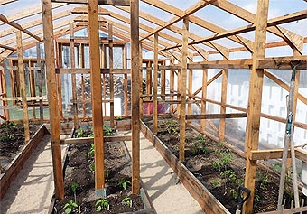
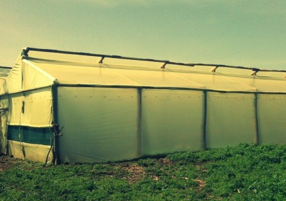
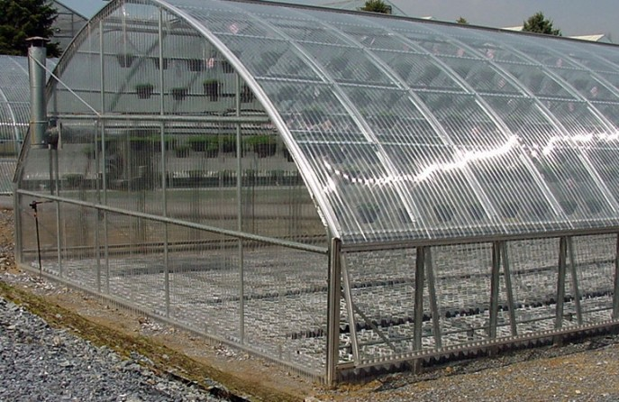
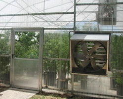
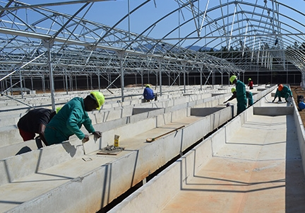

The Chief's Agritech Consultancy
Construction and Design
A greenhouse is a building, room, or area, covered with a transparent material, in which the temperature is maintained within a desired range, used for cultivating tender plants or growing plants out of season. Building a greenhouse can be done on a budget or by professional builders. Choosing a Location; the main element required for a greenhouse is good consistent sunlight. Give preferences to locations that have morning sun over afternoon sun. Although all-day sun is the best option, opening up the area to morning light will increase the growth of the plants.
Whether you build the greenhouse from scratch or build it with a kit, you should choose the size carefully.
 
The larger the greenhouse, the more money it will cost to build and heat. Choosing Covering Materials Use UV-stabilized polyethylene which is cheap or the more expensive but non toxic LDPE grow tarps which last for longer . It is UV-stabilized. Plastic film has to be replaced every few years plastic has a shorter life expectancy then the non toxic LDPE plastic . Use hard, double-walled plastic such as multi wall polycarbonate or corrugated polycarbonate or the more expensive but non BPA containing acrylic (Plexiglas) which has a higher light transparency. . Constructing the Frame

Temperature Regulation
There are several ways of achieving this; placing fans in the corners of the greenhouse. Setting up fans so that they are diagonal and create a airflow.
Solar heat may only account for 25 percent of the heat in your greenhouse, so a backup heater is essential. Consider installing an electric heater. You can also use a wood or oil-based heater, but it must be vented to the outside to ensure good air quality.

Install vents in the ceiling of your greenhouse. The vents should be adjustable. Install a forced-air system, if you are using a glass-frame greenhouse. If you can afford to outfit your greenhouse with its own temperature control system, then you can set it up to grow almost anything. Employ an electrician and a contractor to install your system. Install thermometers or thermostats. You should install several thermometers in case 1 breaks. Place them at different levels of the greenhouse so that you can observe the temperature in your greenhouse at all times.

Maintainance
Tips for greenhouse maintainance
Pest Control The best way to have no pests in a greenhouse is to avoid bringing them into the greenhouse in the first place- thoroughly inspect every single plant that you plan on bringing into the greenhouse. Once a few pests manage to sneak past a greenhouse owner's defences, they may begin to multiply at very fast.
Clean Often Regularly clean and sterilize all of the surfaces of the greenhouse. For anyone who wants to get rid of insects and pests, they should fumigate their greenhouse yearly or biyearly.
Daily Observations Each day be on the lookout for any signs of pests. Some signs are insect sounds and holes in the plant's leaves. When you find a plant that is infested with pests, the plant should be removed immediately before the pests spread to other plants if they haven't already.
Ventilation System The ventilation system that is installed in a greenhouse should be checked frequently to ensure that it is not malfunctioning. When the shutters and louvers get squeaky, you may need to oil them. They need to be oiled, so that they will have no difficulty opening and closing without an excess amount of friction.
Water Tank and Irrigation SystemThe connected lines and hoses of a watering system need to be checked every few months The hoses often become clogged or cracked. To get rid of the dirt in the hoses, the water should be run at full pressure without the cap.

Before deciding to invest in a greenhouse it is imperative that you understand the demands and are willing to meet them to reap the benefits of this construction. If your mind and body are willing, then it’s time to take your gardening experience to the next level.